【转】今日头条 ANR 优化实践系列（2）- 监控工具与分析思路
前言：
在前文，我们对 ANR 设计原理及影响因素 进行了介绍，并对影响 ANR 的不同场景进行归类。但是依靠现有的系统日志，不足以完成复杂场景的问题归因，而且有些信息从应用侧无法获取，这就导致很多线上问题更加棘手；因此我们在应用侧探索了新的监控能力，以弥补信息获取不足的短板。同时对日常分析过程中用到日志信息和分析思路进行总结，以帮忙大家更好的掌握分析技巧，下面我们就来看看相关实现。
Raster 监控工具
俗话说：“工欲善其事，必先利其器”，日常分析 ANR 问题也是如此，一个好的监控工具不仅可以帮助我们在解决常规问题时达到锦上添花的效果，在面对线上复杂隐蔽的问题时，也能为我们打开视野，提供更多线索和思路。
工具介绍：
该工具主要是在主线程消息调度过程进行监控，并按照一定策略聚合，以保证监控工具本身对应用性能和内存抖动影响降至最低。同时对应用四大组件消息执行过程进行监控，便于对这类消息的调度及耗时情况进行跟踪和记录。另外对当前正在调度的消息及消息队列中待调度消息进行统计，从而在发生问题时，可以回放主线程的整体调度情况。此外，我们将系统服务的 CheckTime 机制迁移到应用侧，应用为线程 CheckTime 机制，以便于系统信息不足时，从线程调度及时性推测过去一段时间系统负载和调度情况。
因此该工具用一句话来概括就是：由点到面，回放过去，现在和将来。
因其实现原理和消息聚合后的效果，直观展示主线程调度过程长短不一的耗时片段，犹如一道道光栅，故将该工具命名为 **Raster[ˈræstər]**。
监控工具由来
举个例子：
例如下图，是线下遇到的 ANR 问题，从手机端获取的 Trace 日志，可以看到从主线程堆栈上基本得不到太多有效信息。
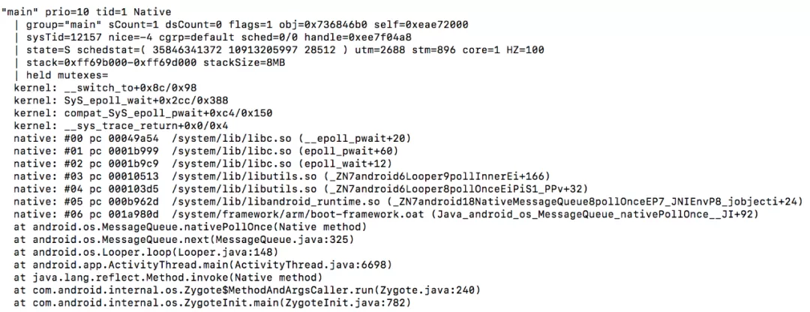
继续从 Trace 中分析其它信息，包含了各个进程的虚拟机和线程状态信息，以及 ANR 之前或之后一段时间，CPU 使用率比较高的进程乃至系统负载(CPU，IO)的相关信息等等，如下图：
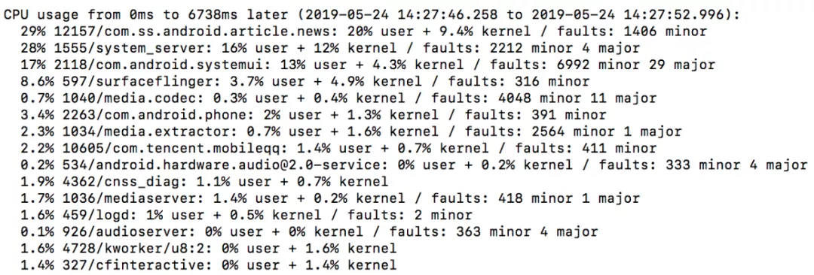
但是从这些信息中，相信很多同学都很难再进一步分析，因为这些信息只是列举了当前各个进程或线程的状态，并没有很好的监控和记录影响这些指标的过程。而现实中这类场景的问题，每天都在线上大量发生。那么针对这种情况该如何更好的解决呢？下面就来介绍一下我们是如何应对的。
消息调度监控
在 Android 系统的 ANR 设计原理及影响因素 一文中，我们讲到，ANR 问题很多场景都是历史消息耗时较长并不断累加后导致的，但是在 ANR 发生时我们并不知道之前都调度了哪些消息，如果可以监控每次消息调度的耗时并记录，当发生 ANR 时，获取这些记录信息，并能计算出当前正在执行消息的耗时，是不是就可以清晰的知道 ANR 发生前主线程都发生了什么？按照这个思路，整理出如下示意图：
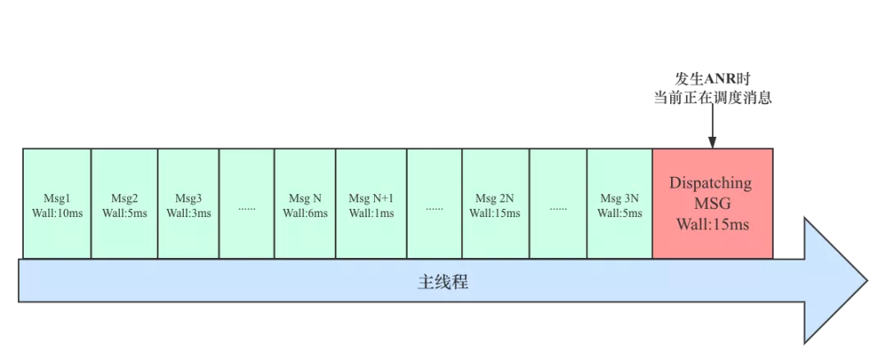
但是通过上面示意图并结合实际业务场景，我们发现，对于大多数业务消息，单次耗时都很少，如果每个消息都单独记录，要想跟踪记录 ANR 前 10S 甚至更长时间范围内的所有消息，可能需要成千上万条记录，这个显然是不合理的，而且这么多的消息也不方便我们后续查看。
消息聚合分类
联想到实际业务场景很多情况都是耗时较少的消息，而在排查这类问题过程耗时较少的消息基本是可以直接忽略的，因此我们是不是可以对这类消息按照一定条件进行聚合，将一段时间以内的消息进行累加计算，如果累计耗时超过我们规定的阈值，那么就将这些消息的数量和累计耗时合并成一条记录，如 16 个消息累计耗时刚好超过 300ms，则生成一条记录。以此类推存储 100 条的话，就能监控到 ANR 发生前 30S 主线程的调度历史了(实际可能是大于 15S，至于为何是这个范围，我们会在后面说明)，如此一来就可以较好的解决大量记录和频繁更新带来的内存抖动问题。
根据上面的思路，我们对消息监控及记录又进一步的进行聚合优化和关键消息过滤；总结来看，分为以下几种类型：
多消息聚合：
该场景主要用于主线程连续调度多个消息，并且每个消息耗时都很少的情况下，将这些消息耗时累加，直到这些消息累计耗时超过设置的阈值，则汇总并生成一条记录，并在这条记录中标明本次聚合总共调度了多少个消息。按照消息聚合的思路，发生问题时主线程消息调度示意图如下（Count 表示本条记录包含了多少个消息；Wall 表示本轮消息执行的累计耗时）：
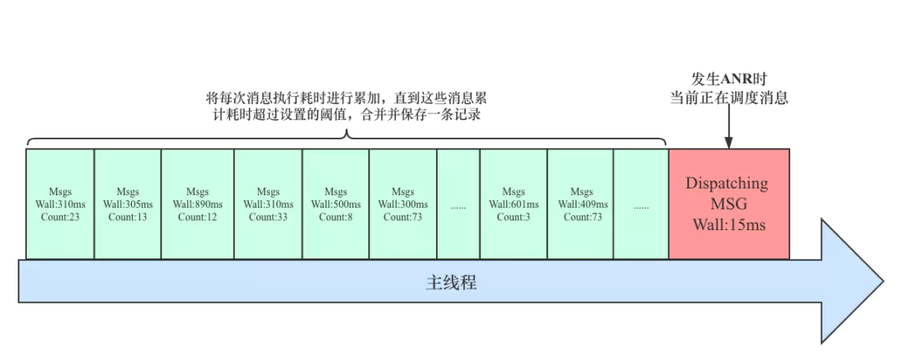
消息聚合拆分：
针对上面多消息聚合策略，会存在一些特殊情况，例如在将多个消息进行累计统计过程中，如果前 N 次消息调度结束后，累计耗时都没有超过阈值，但是调度完下一个消息之后，发现累计耗时超过阈值，并且还明显超出，如设置阈值是 300ms，但是前 N 个消息累计 200ms，加上本次消息累计耗时达到了 900ms，那么这种情况，我们明显知道是最后一次消息耗时严重，因此需要将本次消息单独记录，并标记其耗时和相关信息，同时将之前 N 次消息调度耗时和消息数聚合在一起并单独记录，这种场景相当于一次生成 2 条记录。
为了考虑监控工具对性能的影响，我们只在每轮统计需要保存时，更新线程 cpu 执行时间，如果发生消息聚合拆分的场景，会默认前一条记录的 cpu 时间为-1，因为本条记录并不是我们重点关注的，所以会把本轮统计的 cpu 时间全部归到后一条消息。
在一些极端场景下，如本轮监控第一个消息执行耗时为 1ms，但是加上本次消息耗时，累计超过 600ms，因此两次消息累计耗时远大于设定的阈值 300ms，那么就需要对本次耗时严重的消息单独记录，而前面那个 1ms 的消息也需要被单独进行记录；类似情形如此反复，就会出现上面说的保存 100 条记录，整体监控可回溯的时长区间存在波动的情况；该场景的示意图如下（Count 表示本条记录包含了多少个消息；Wall 表示本轮消息执行的累计耗时）：
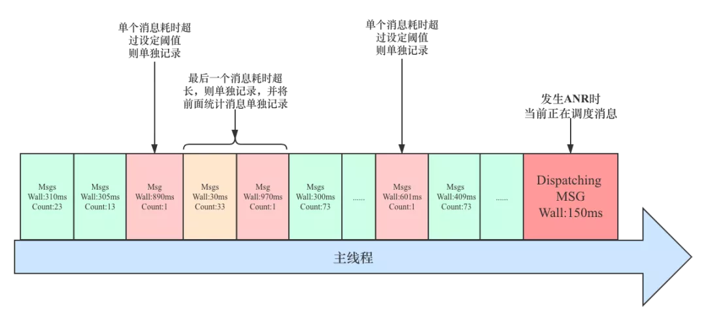
关键消息聚合：
除了上面单次耗时严重的消息需要拆分并单独记录之外，还有一类消息也需要我们单独标记，以达到更好的识别，那就是可能会引起 ANR 的应用组件，如 Activity，Service，Receiver，Provider 等等。为了监控这几种组件的执行过程，我们需要对 ActivityThread.H 的消息调度进行监控，当发现上面这些组件有关的消息在执行时，不管其耗时多少，都对其进行单独记录，并将之前监控的一个或多个消息也保存为一条记录。该场景的示意图如下（Count 表示本条记录包含了多少个消息；Wall 表示本轮消息执行的累计耗时）：
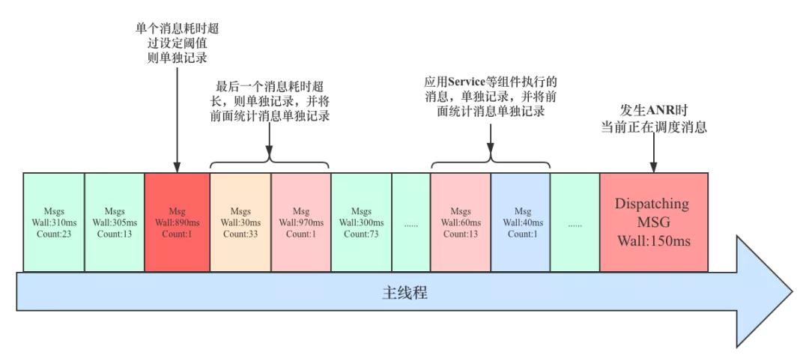
IDLE 场景聚合：
熟悉消息队列的同学都知道，主线程是基于消息队列的方式进行调度，在每次消息调度完成之后都会从消息队列读取下一个待调度的消息，如果消息队列没有消息，或者下一个消息没有到设定的调度时间，并且也没有 IDLE 消息等待调度，那么主线程将会进入 IDLE 状态，如下示意图：
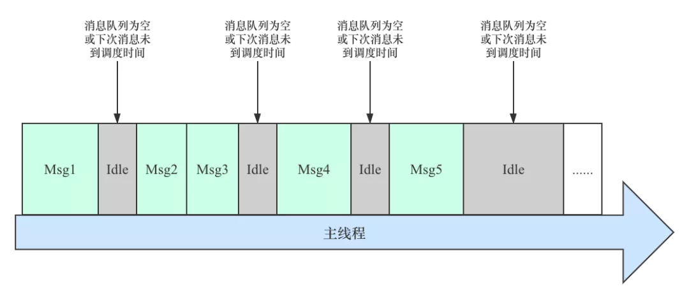
正是因为上面的调度逻辑，使得主线程在消息调度过程中会多次进入 IDLE 状态，而这个过程也涉及到线程上下文切换(如：Java 环境切换到 Native 环境)，会去检测是否有挂起请求，所以对调用频繁的接口来说，会在 ANR 发生时被命中，理论上调用越频繁的接口被命中的概率越大，如下图堆栈：
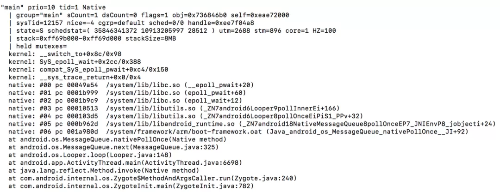
但是上面这种场景的 IDLE 停留时长可长可短，如果按照完全上面那几类消息聚合策略，多个消息连续聚合的话，可能会把这类场景也给聚合进来，一定程度造成干扰，这显然不是我们想要的。为此需要进一步优化，在每次消息调度结束后，获取当前时间，在下次消息调度开始前，再次获取当前时间，并统计距离上次消息调度结束的间隔时长。如果间隔较长，那么也需要单独记录，如果间隔时间较短，我们认为可以忽略，并将其合并到之前统计的消息一起跟踪，到这里就完成了各类场景的监控和归类；该场景的示意图如下：
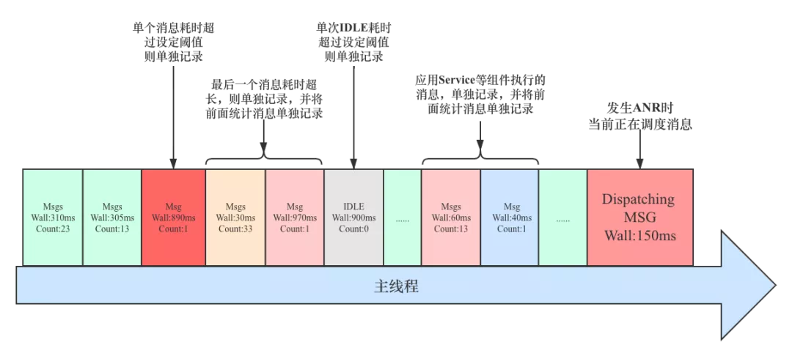
耗时消息堆栈采样：
在上面重点讲述了主线程消息调度过程的监控和聚合策略，便于发生 ANR，在线下进行回放。但是那些耗时较长的消息，仅仅知道其耗时和消息 tag 是远远不够的，因为每个消息内部的业务逻辑对于我们来说都是黑盒，各个接口耗时也存在很多不确定性，如锁等待、Binder 通信、IO 等系统调用。
因此需要知道这些耗时消息内部接口的耗时情况，我们选取了 2 种方案进行对比：
第一种方案：是对每个函数进行插桩，在进入和退出过程统计其耗时，并进行聚合和汇总。该方案的优点是可以精确的知道每个函数的真实耗时，缺点是很影响包体积和性能，而且不利于其他产品高效复用。
第二种方案，在每个消息开始执行时，触发子线程的超时监控，如果在超时之后本次消息还没执行结束，则抓取主线程堆栈，并继续对该消息设置下一次超时监控，直到该消息执行结束并取消本轮监控。如果在触发超时之前已经执行完毕，则取消本次监控并在下次消息开始执行时，再次设置超时监控，但是因为大部分消息耗时都很少，如果每次都频繁设置和取消，将会带来性能影响，因此我们对此进行优化，采用系统 ANR 超时监控相同的时间对齐方案，具体来说就是：
以消息开始时间加上超时时长为目标超时时间，每次超时时间到了之后，检查当前时间是否大于或等于目标时间，如果满足，则说明目标时间没有更新，也就是说本次消息没结束，则抓取堆栈。如果每次超时之后，检查当前时间小于目标时间，则说明上次消息执行结束，新的消息开始执行并更新了目标超时时间，这时异步监控需对齐目标超时，再次设置超时监控，如此往复。
根据上面的思路，整理流程图如下：
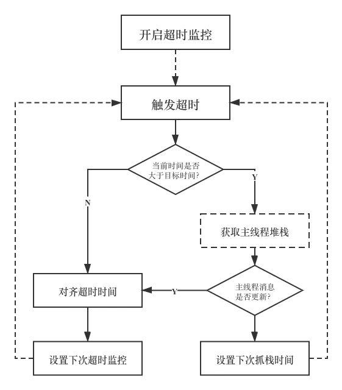
需要注意的是，消息采样堆栈的超时时长不可设置太短，否则频繁抓取堆栈对主线程性能影响较大，同时也不能设置太长，否则会因为采样过低导致数据置信度降低；具体时长根据每个产品复杂度灵活调整即可。
监控正在调度消息及耗时：
除了监控 ANR 发生之前主线程历史消息调度及耗时之外，也需要知道 ANR 发生时正在调度的消息及其耗时，以便于在看到 ANR 的 Trace 堆栈时，可以清晰的知道当前 Trace 逻辑到底执行了多长时间，帮忙我们排除干扰，快速定位；借助这个监控可以很好的回答大家，ANR 发生时当前 Trace 堆栈是否耗时以及耗时多久的问题，避免陷入“Trace 堆栈”误区。
获取 Pending 消息：
同时除了监控主线程历史消息调度及耗时之外，也需要在 ANR 发生时，获取消息队列中待调度的消息，为我们分析问题时提供更多线索，如：
- 消息队列中待调度消息是否被 Block 以及被 Block 时长，根据 Block 时长可以推测主线程的繁忙程度；
- 可以观察消息队列中是否存在发生 ANR 的应用组件消息，如 Service 消息，以及其在待调度消息队列中的位置和 Block 时长；
- 可以观察消息队列中都有哪些消息，这些消息是否有一定规律，如大量重复消息，如果有大量重复消息，则说明很有可能与该消息相关的业务逻辑发生异常，频繁和主线程交互(后面的案例分析中我们也会有介绍)。
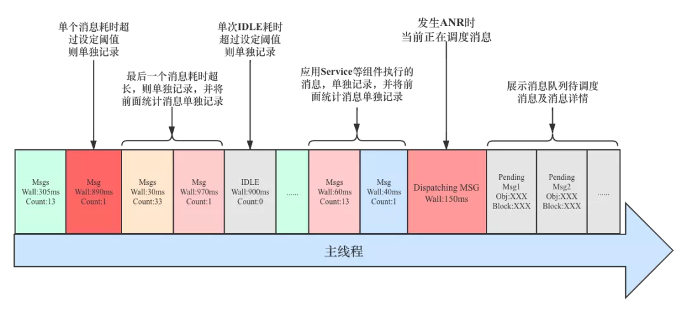
之前我们讲到，对于一次消息调度，它的耗时可以从两个维度进行统计，即 Wall Duration 和 Cpu Duration，通过这两个维度的统计，可以帮助我们更好的推测一次严重耗时，是执行大量业务逻辑还是处于等待或被抢占的情况。如果是后者，那么可以看到这类消息的 Wall Duration 和 Cpu Duration 比例会比较大，当然如何更好更全面的区分一次消息耗时是等待较多还是线程调度被抢占，我们将会在后面结合其他参考信息进行介绍。
完整示意图
在这里我们再把 Cpu Duration 耗时也给统计之后，那么整个有关主线程完整的消息调度监控功能就基本完成了。示意图如下：
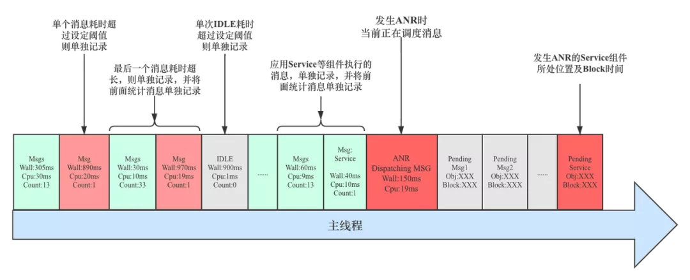
通过这个消息调度监控工具，我们就可以很清晰的看到发生 ANR 时，主线程历史消息调度情况；当前正在调度消息耗时，以及消息队列待调度消息及相关信息；而且利用这个监控工具，一眼便知 ANR 发生时主线程 Trace 实际耗时情况，因此很好解决了部分同学对当前堆栈是否耗时以及耗时多久的疑问。
从上面介绍可以看出，为了重点标记单次耗时消息和关键消息，我们使用了多种聚合策略，因此监控过程记录的信息可能会代表不同类型的消息，为了便于区分，我们在可视化展示时加上 Type 标识，便于区别。
应用示例：
例如下图，从 Trace 日志可以看到，ANR 发生时主线程被 Block 在 Binder 通信过程，可能很多同学第一反应是 WMS 服务没有及时响应 Binder 请求导致的问题。
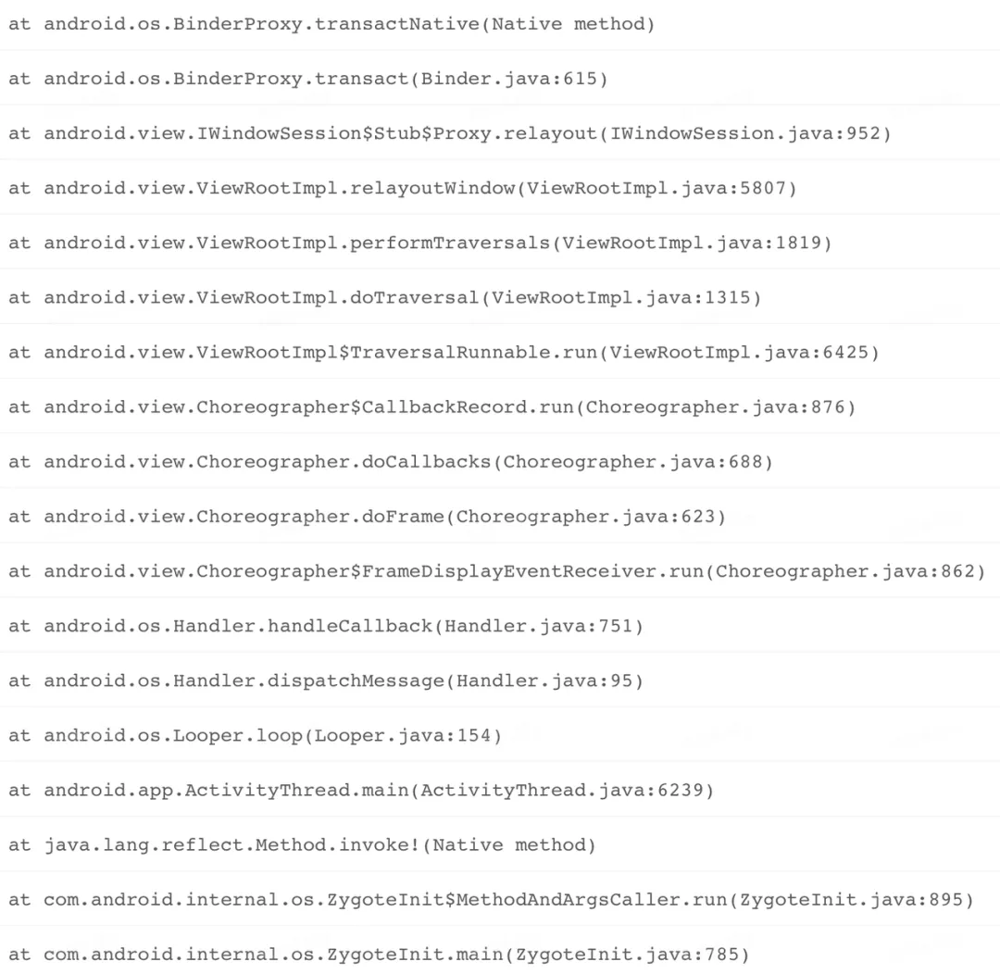
但是再结合下面的消息调度监控来核实一下，我们发现当前调度的消息 Wall duration 只有 44ms，而在该消息之前有两次历史消息耗时比较严重，分别为 2166ms，3277ms，也就是说本次 Binder 调用耗时并不严重，真正的问题是前面 2 次消息耗时较长，影响了后续消息调度，只有同时解决这 2 个消息耗时严重问题，该 ANR 问题才可能解决。
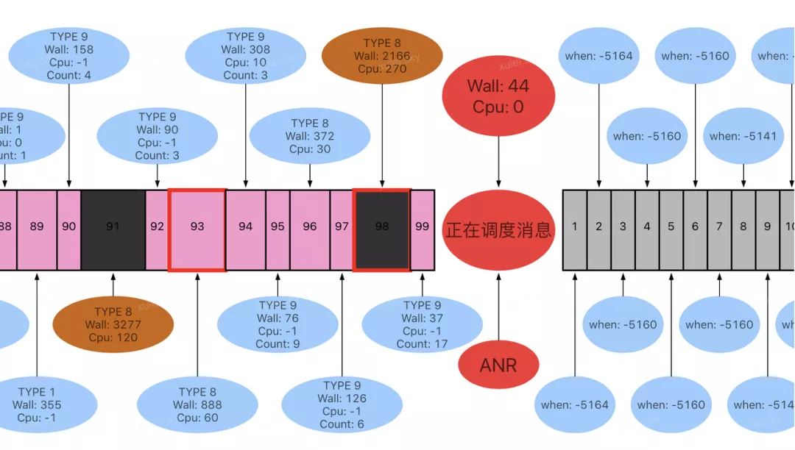
如果没有消息调度监控工具，上去就盲目的分析当前逻辑调用的 IPC 问题，可能就犯了方向性的错误，掉入“Trace 堆栈”陷阱中。
接下来再来看一个发生在线上的另外一个实例，从下图可以看到主线程正在调度的消息耗时超过 1S，但是在此之前的另一个历史消息耗时长达 9828ms。继续观察下图消息队列待调度的消息状态(灰色示意)，可以看到第一个待调度的消息被 Block 了 14S 之久。由此我们可以知道 ANR 消息之前的这个历史消息，才是导致 ANR 的罪魁祸首，当然这个正在执行的消息也需要优化一下性能，因为我们在前面说过：“发生 ANR 时，没有一个消息是无辜的。”
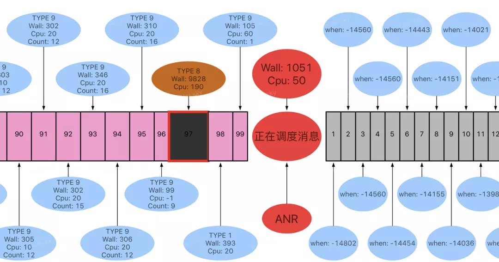
正是因为有了上面这些监控能力，让我们在日常面对 Trace 日志中的业务逻辑是否耗时以及耗时多久的困惑，瞬间就会变得清晰起来。
Checktime
Checktime 背景介绍：
Checktime 是 Android 系统针对一些系统服务(AMS，InputService 等)中高频访问的接口，执行时间的监控，当这类接口真实耗时超过预期值将会给出提示信息，此类设计为了在真实环境监测进程被调度和响应能力的一种结果反馈。具体实现是，在每个函数执行前和执行后分析获取当前系统时间，并计算差值，如果该接口耗时超过其设定的阈值，则会触发“slow operation”的信息提醒，部分代码实现如下：
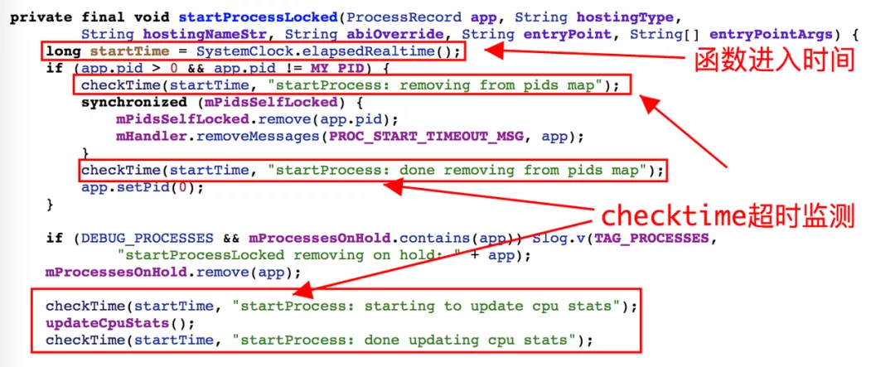
Checktime 逻辑很简单，用当前系统时间减去对比时间，如果超过 50ms，则给出 Waring 日志提示。
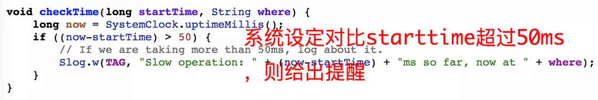
我们在分析线下问题，或者在系统层面分析这类问题时，经常会在 logcat 中看到这类消息，但是对于线上的三方应用来说，因为权限问题无法获取系统日志，只能自己实现了。
线程 Checktime：
了解完系统 Checktime 设计思路及实现之后，我们就可以在应用层实现类似的功能了。通过借助其它子线程的周期检测机制，在每次调度前获取当前系统时间，然后减去我们设置延迟的时间，即可得到本次线程调度前的真实间隔时间，如设置线程每隔 300ms 调度一次，结果发现实际响应时间间隔有时会超过 300ms，如果偏差越大，则说明线程没有被及时调度，进一步反映系统响应能力变差。
通过这样的方式，即使在线上环境获取不到系统日志，也可以从侧面反映不同时段系统负载对线程调度影响，如下图示意，当连续发生多次严重 Delay 时，说明线程调度受到了影响。
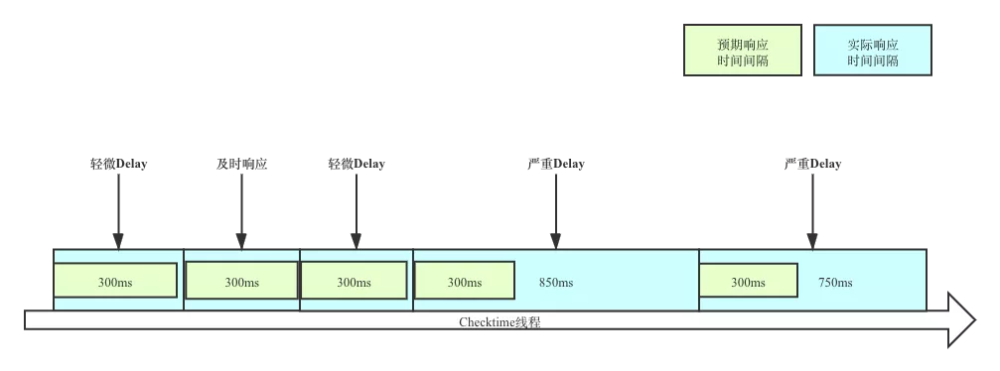
小结：
通过上述监控能力，我们可以清晰的知道 ANR 发生时主线程历史消息调度以及耗时严重消息的采样堆栈，同时可以知道正在执行消息的耗时，以及消息队列待中调度消息的状态。同时通过线程 CheckTime 机制从侧面反映线程调度响应能力，由此完成了应用侧监控信息从点到面的覆盖。但是在面对 ANR 问题时，只有这个监控，是远远不够的，需要结合其他信息整体分析，以应对更为复杂的系统环境。下面就结合监控工具来介绍一下 ANR 问题的分析思路。
ANR 分析思路：
在介绍分析思路之前，我们先来说一下分析这类问题需要用到哪些日志，当然在不同的环境下，获取信息能力会有很大差别，如线下环境和线上环境，应用侧和系统角度都有差异；这里我们会将我们日常排查问题常用的信息都介绍一下，便于大家更好的理解，主要包括以下几种：
- Trace 日志
- AnrInfo
- Kernel 日志
- Logcat 日志
- Meminfo 日志
- Raster 监控工具
对于应用侧来说，在线上环境可能只能拿到当前进程内部的线程堆栈(取决于实现原理，参见：Android 系统的 ANR 设计原理及影响因素)以及 ANR Info 信息。在系统侧，几乎能获取到上面的所有信息，对于这类问题获取的信息越多，分析定位成功率就越大，例如可以利用完整的 Trace 日志，分析跨进程 Block 或死锁问题，系统内存或 IO 紧张程度等等，甚至可以知道硬件状态，如低电状态，硬件频率(CPU，IO，GPU)等等。
关键信息解读：
在这里我们把上面列举的日志进行提取并解读，以便于大家在日常开发和面对线上问题，根据当前获取的信息进行参考。
Trace 信息
在前文Android 系统的 ANR 设计原理及影响因素中，我们讲到了在发生 ANR 之后，系统会 Dump 当前进程以及关键进程的线程堆栈，状态(红框所示关键信息，稍后详细说明)，示例如下：
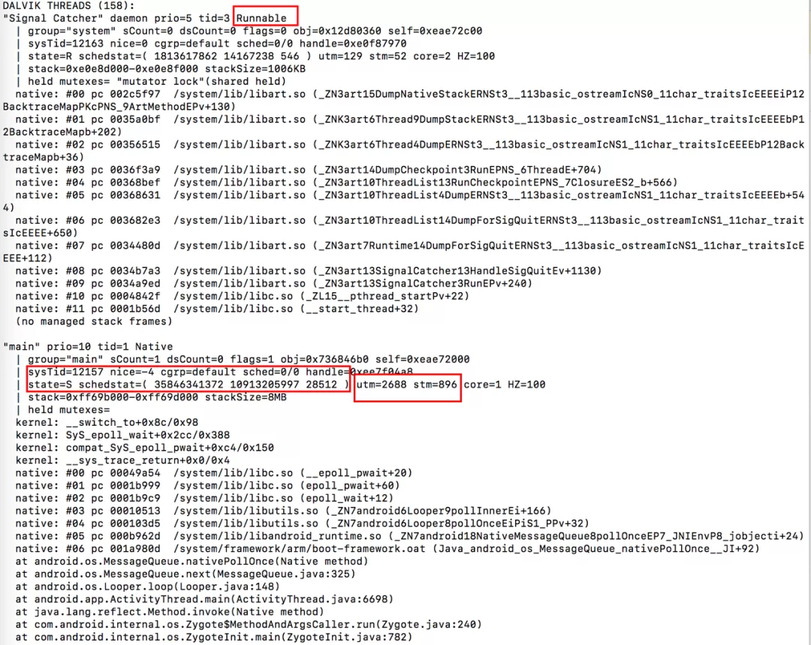
上面的日志包含很多信息，这里将常用的关键信息进行说明，如下：
线程堆栈：
这个比较好理解，也就是发生 ANR 时，线程正在执行的逻辑，但是很多场景下，获取的堆栈耗时并不长，原因详见 Android 系统的 ANR 设计原理及影响因素。
线程状态：
见上图“state=xxx”，表示当前线程工作状态，Running 表示当前线程正在被 CPU 调度，Runnable 表示线程已经 Ready 等待 CPU 调度，如上图 SignalCatcher 线程状态。Native 态则表示线程由 Java 环境进入到 Native 环境，可能在执行 Native 逻辑，也可能是进入等待状态；Waiting 表示处于空闲等待状态。除此之外还有 Sleep，Blocked 状态等等；
线程耗时：
见上图“utmXXX，stmXXX”，表示该线程从创建到现在，被 CPU 调度的真实运行时长，不包括线程等待或者 Sleep 耗时，其中线程 CPU 耗时又可以进一步分为用户空间耗时(utm)和系统空间耗时(stm)，这里的单位是 jiffies，当 HZ=100 时，1utm 等于 10ms。
- utm： Java 层和 Native 层非 Kernel 层系统调用的逻辑，执行时间都会被统计为用户空间耗时；
- stm： 即系统空间耗时，一般调用 Kernel 层 API 过程中会进行空间切换，由用户空间切换到 Kernel 空间，在 Kernel 层执行的逻辑耗时会被统计为 stm，如文件操作，open,write,read 等等；
- core：最后执行这个线程的 cpu 核的序号。
线程优先级：
nice： 该值越低，代表当前线程优先级越高，理论上享受的 CPU 调度能力也越强。对于应用进程(线程)来说，nice 范围基本在 100~139。随着应用所在前后台不同场景，系统会对进程优先级进行调整，厂商可能也会开启 cpu quota 等功能去限制调度能力；
调度态：
schedstat： 参见“schedstat=( 1813617862 14167238 546 )”，分别表示线程 CPU 执行时长(单位 ns)，等待时长，Switch 次数。
AnrInfo 信息
除了 Trace 之外，系统会在发生 ANR 时获取一些系统状态，如 ANR 问题发生之前和之后的系统负载以及 Top 进程和关键进程 CPU 使用率。这些信息如果在本地环境可以从 Logcat 日志中拿到，也可以在应用侧通过系统提供的 API 获取(参见：Android 系统的 ANR 设计原理及影响因素)，Anr Info 节选部分信息如下：
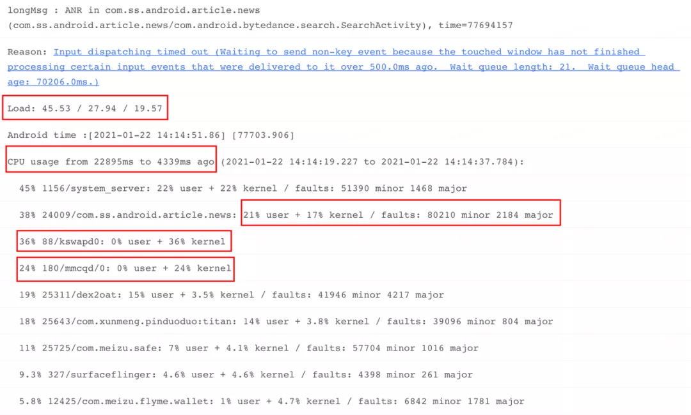
对于上图信息，主要对以下几部分关键信息进行介绍：
ANR 类型(longMsg)：
表示当前是哪种类型的消息或应用组件导致的 ANR，如 Input，Receiver，Service 等等。
系统负载(Load)：
表示不同时间段的系统整体负载，如：”Load：45.53 / 27.94 / 19.57”，分布代表 ANR 发生前 1 分钟，前 5 分钟，前 15 分钟各个时间段系统 CPU 负载，具体数值代表单位时间等待系统调度的任务数(可以理解为线程)。如果这个数值过高，则表示当前系统中面临 CPU 或 IO 竞争，此时，普通进程或线程调度将会受到影响。如果手机处于温度过高或低电等场景，系统会进行限频，甚至限核，此时系统调度能力也会受到影响。
此外，可以将这些时间段的负载和应用进程启动时长进行关联。如果进程刚启动 1 分钟，但是从 Load 数据看到前 5 分钟，甚至前 15 分钟系统负载已经很高，那很大程度说明本次 ANR 在很大程度会受到系统环境影响。
进程 CPU 使用率：
如上图，表示当前 ANR 问题发生之前(CPU usage from XXX to XXX ago)或发生之后(CPU usage from XXX to XXX later)一段时间内，都有哪些进程占用 CPU 较高，并列出这些进程的 user，kernel 的 CPU 占比。当然很多场景会出现 system_server 进程 CPU 占比较高的现象，针对这个进程需要视情况而定，至于 system_server 进程 CPU 占比为何普遍较高，参见：Android 系统的 ANR 设计原理及影响因素。
minor 表示次要页错误，文件或其它内存被加载到内存后，但是没有被映射到当前进程，通过内核访问时，会触发一次 Page Fault。如果访问的内容还没有加载到内存，那么会触发 major，所以对比可以看到，major 的系统开销会比 minor 大很多。
关键进程：
- kswapd： 是 linux 中用于页面回收的内核线程，主要用来维护可用内存与文件缓存的平衡，以追求性能最大化，当该线程 CPU 占用过高，说明系统可用内存紧张，或者内存碎片化严重，需要进行 file cache 回写或者内存交换(交换到磁盘)，线程 CPU 过高则系统整体性能将会明显下降，进而影响所有应用调度。
- mmcqd： 内核线程，主要作用是把上层的 IO 请求进行统一管理和转发到 Driver 层，当该线程 CPU 占用过高，说明系统存在大量文件读写，当然如果内存紧张也会触发文件回写和内存交换到磁盘，所以 kswapd 和 mmcqd 经常是同步出现的。
系统 CPU 分布：
如下图，反映一段时间内，系统整体 CPU 使用率，以及 user，kernel，iowait 方向的 CPU 占比，如果发生大量文件读写或内存紧张的场景，则 iowait 占比较高，这个时候则要进一步观察上述进程的 kernel 空间 CPU 使用情况，并通过进程 CPU 使用，再进一步对比各个线程的 CPU 使用，找出占比最大的一个或一类线程。
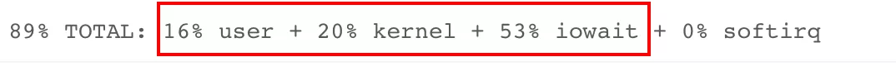
Logcat 日志：
在 log 日志中，我们除了可以观察业务信息之外，还有一些关键字也可以帮我们去推测当前系统性能是否遇到问题，如下图， “Slow operation”，“Slow delivery” 等等。
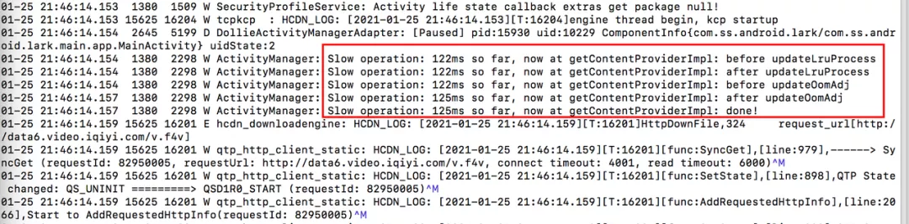
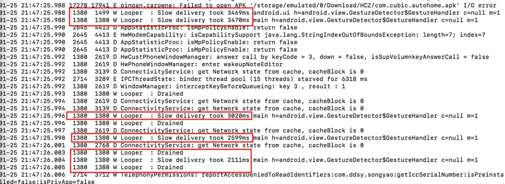
Slow operation
Android 系统在一些频繁调用的接口中，分别在方法前后利用 checktime 检测，以判断本次函数执行耗时是否超过设定阈值，通常这些值都会设置的较为宽松，如果实际耗时超过设置阈值，则会给出“Slow XXX”提示，表示系统进程调度受到了影响，一般来说系统进程优先级比较高，如果系统进程调度都受到了影响，那么则反映了这段时间内系统性能很有可能发生了问题。
Kernel 日志：
对于应用侧来说，这类日志基本是拿不到的，但是如下是在线下测试或者从事系统开发的同学，可以通过 dmesg 命令进行查看。对于 kernel 日志，我们主要分析的是 lowmemkiller 相关信息，如下图：
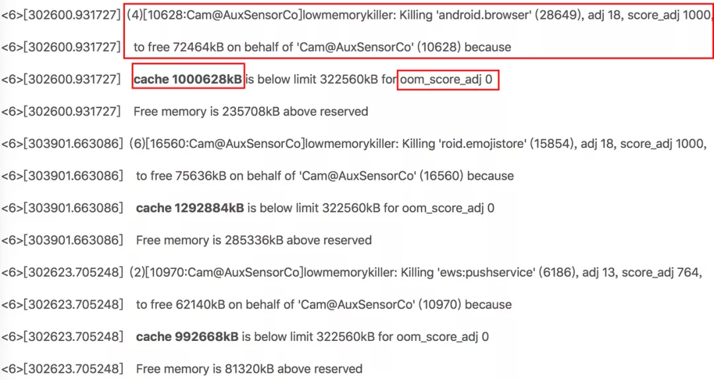
Lowmemkiller：
从事性能(内存)优化的同学对该模块都比较熟悉，主要是用来监控和管理系统可用内存，当可用内存紧张时，从 kernel 层强制 Kill 一些低优先级的应用，以达到调节系统内存的目的。而选择哪些应用，则主要参考进程优先级(oom_score_adj)，这个优先级是 AMS 服务根据应用当前的状态，如前台还是后台，以及进程存活的应用组件类型而计算出来的。例如：对于用户感知比较明显的前台应用，优先级肯定是最高的，此外还有一些系统服务，和后台服务(播放器场景)优先级也会比较高。当然厂商也对此进行了大量的定制(优化)，以防止三方应用利用系统设计漏洞，将自身进程设置太高优先级进而达到保活目的。
消息调度时序图：

如上图，在我们分析完系统日志之后，会进一步的锁定或缩小范围，但是最终我们还是要回归到主线程进一步的分析 Trace 堆栈的业务逻辑以及耗时情况，以便于我们更加清晰的知道正在调度的消息持续了多长时间。但是很多情况当前 Trace 堆栈并不是我们期待的答案，因此需要进一步的确认 ANR 之前主线程的调度信息，评估历史消息对后续消息调度的影响，便于我们寻找“真凶”。
当然，有时也需要进一步的参考消息队列中待调度消息，在这些消息里面，除了可以看到 ANR 时对应的应用组件被 Block 的时长之外，还可以了解一下都有哪些消息，这些消息的特征有时对于我们分析问题也会提供有力的证据和方向。
分析思路
在上面我们对各类日志的关键信息进行了基本释义，下面就来介绍一下，当我们日常遇到 ANR 问题时，是如何分析的，总结思路如下：
分析堆栈，看看是否存在明显业务问题(如死锁，业务严重耗时等等)，如果无上述明显问题，则进一步通过 ANR Info 观察系统负载是否过高，进而导致整体性能较差，如 CPU，Mem，IO。然后再进一步分析是本进程还是其它进程导致，最后再分析进程内部分析对比各个线程 CPU 占比，找出可疑线程。
综合上述信息，利用监控工具收集的信息，观察和找出 ANR 发生前一段时间内，主线程耗时较长的消息都有哪些，并查看这些耗时较长的消息执行过程中采样堆栈，根据堆栈聚合展示，进一步的对比当前耗时严重的接口或业务逻辑。
以上分析思路，进一步细分的话，可以分为以下几个步骤：
一看 Trace：
死锁堆栈
观察 Trace 堆栈，确认是否有明显问题，如主线程是否与其他线程发生死锁，如果是进程内部发生了死锁，那么恭喜，这类问题就清晰多了，只需找到与当前线程死锁的线程，问题即可解决；
业务堆栈
观察通过 Trace 堆栈，发现当前主线程堆栈正在执行业务逻辑，你找到对应的业务同学，他承认该业务逻辑确实存在性能问题，那么恭喜，你很有可能解决了该问题，为什么只是有可能解决该问题呢？因为有些问题取决于技术栈或框架设计，无法在短时间内解决。如果业务同学反馈当前业务很简单，基本不怎么耗时，而这种场景也是日常经常遇到的一类问题，那么就可能需要借助我们的监控工具，追溯历史消息耗时情况了；
IPC Block 堆栈
观察通过 Trace 堆栈，发现主线程堆栈是在跨进程(Binder)通信，那么这个情况并不能当即下定论就是 IPC block 导致，实际情况也有可能是刚发送 Binder 请求不久，以及想要进一步的分析定位，这时也需要借助我们的自研监控工具了；
系统堆栈
通过观察 Trace，发现当前堆栈只是简单的系统堆栈，想要搞清楚是否发生严重耗时，以及进一步的分析定位，如我们常见的 NativePollOnce 场景，那么也需要借助我们的自研监控工具进一步确认了。
二看关键字：Load，CPU，Slow Operation，Kswapd，Mmcqd，Kwork，Lowmemkiller 等等
刚才我们介绍到，上面这些关键字是反应系统 CPU，Mem，IO 负载的关键信息，在分析完主线程堆栈信息之后，还需要进一步在 ANRInfo，logcat 或 Kernel 日志中搜索这些关键字，并根据这些关键字当前数值，判断当前系统是否存在资源(CPU，Mem，IO)紧张的情况；
三看系统负载分布：观察系统整体负载：User,Sys,IOWait
通过观察系统负载，则可以进一步明确是 CPU 资源紧张，还是 IO 资源紧张；如果系统负载过高，一定是有某个进程或多个进程引起的。反之系统负载过高又会影响到所有进程调度性能。通过观察 User，Sys 的 CPU 占比，可以进一步发分析当前负载过高是发生在应用空间，还是系统空间，如大量调用逻辑(如文件读写，内存紧张导致系统不断回收内存等等)，知道这些之后，排查方向又会进一步缩小范围。
四看进程 CPU：观察 Top 进程的 CPU 占比
从上面分析，在我们知道当前系统负载过高，是发生在用户空间还是内核空间之后，那么我们就要通过 Anrinfo 的提供的进程 CPU 列表，进一步锁定是哪个(些)进程导致的，这时则要进一步的观察每个进程的 CPU 占比，以及进程内部 user，sys 占比。
在分析进程 CPU 占比过程，有一个关键的信息，要看统计这些进程 CPU 过高的场景是发生在 ANR 之前的一段时间还是之后一段时间，如下图表示 ANR 之前 4339ms 到 22895ms 时间内进程的 CPU 使用率。
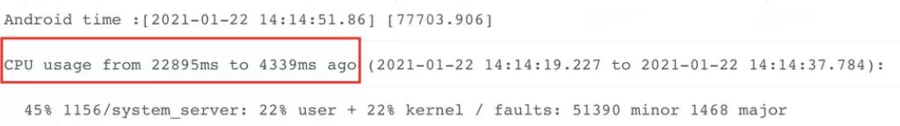
五看 CPU 占比定线程 ：对比各线程 CPU 占比，以及线程内部 user 和 kernel 占比
在通过系统负载(user,sys,iowait)锁定方向之后，又通过进程列表锁定目标进程，那么接下来我们就可以从目标进程内部分析各个线程的(utm,stm)，进一步分析是哪个线程有问题了。
在 Trace 日志的线程信息里可以清晰的看到每个线程的 utm，stm 耗时。至此我们就完成了从系统到进程，再到进程内部线程方向的负载分析和排查。当然，有时候可能导致系统高负载的不是当前进程，而是其他进程导致，这时同样会影响其他进程，进而导致 ANR。
六看消息调度锁定细节
在分析和明确系统负载是否正常，以及负载过高是哪个进程引起的结论之后，接下来便要通过我们的监控工具，进一步排查是当前消息调度耗时导致，历史消息调度耗时导致，还是消息过于频繁导致。同时通过我们的线程 CheckTime 调度情况分析当前进程的 CPU 调度是否及时以及影响程度，在锁定上述场景之后，再进一步分析耗时消息的采样堆栈，才算找到解决问题的终极之钥。当然耗时消息内部可能存在一个或多个耗时较长的函数接口，或者会有多个消息存在耗时较长的函数接口，这就是我们前文中提到的：“发生 ANR 时，没有一个消息是无辜的”
更多信息
除了上面的一些信息，我们还可以结合 logcat 日志分析 ANR 之前的一些信息，查看是否存在业务侧或系统侧的异常输出，如搜索“Slow operation”，”Slow delivery”等关键字。也可以观察当前进程和系统进程是否存在频繁 GC 等等，以帮忙我们更全面的分析系统状态。
总结：
上面我们重点介绍了基于主线程消息调度的监控工具，实现了“由点到面”的监控能力，以便于发生 ANR 问题时，可以更加清晰直观的整体评估主线程的“过去，现在和将来”。同时结合日常实践，介绍了在应用侧分析 ANR 问题经常用到的日志信息和分析思路。
目前，Raster 监控工具因为其很好的提升了问题定位效率和成功率，成为 ANR 问题分析利器，并融合到公司性能稳定性监控平台，为公司众多产品广泛使用。接下来我们将利用该工具并结合上面的分析思路，讲一讲实际工作中遇到不同类型的 ANR 问题时，是如何快速分析和定位问题的。